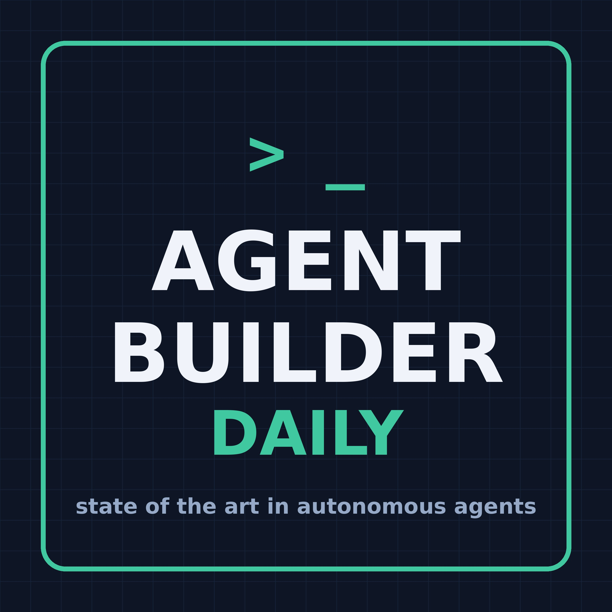

Agent Builder Daily
A daily ~10-minute briefing on the state of the art in building autonomous AI agents: memory, context engineering, skills, evals, sandboxing, user-data safety, harnesses, and more. Generated from a personal research wiki.
Subscribe: paste https://mulch-mgs.github.io/agent-pod-6031af8f/feed.xml into your podcast app.
- 2026-11-10 - Episode 18 - The Receipt Is the Product (mp3)
- 2026-11-09 - Episode 17 - The Badge, Not the Key (mp3)
- 2026-11-08 - Episode 16 - The Weights Learn the Job (mp3)
- 2026-11-07 - Episode 15 - The Bill Is the Loop (mp3)
- 2026-11-06 - Episode 14 - The Screen Is the Last Mile (mp3)
- 2026-11-05 - Episode 13 - The Gate That Gets Tired (mp3)
- 2026-11-04 - Episode 12 - The Trace Is the Truth (mp3)
- 2026-11-03 - Episode 11 - The Data You Never Collect (mp3)
- 2026-11-02 - Episode 10 - Assume You Will Be Tricked (mp3)
- 2026-11-01 - Episode 9 - The Sandbox Is the Boundary (mp3)
- 2026-10-31 - Episode 8 - Doubt the Ruler First (mp3)
- 2026-10-30 - Episode 7 - Many Agents, One Bill (mp3)
- 2026-10-29 - Episode 6 - The Protocol Is Not the Permission (mp3)
- 2026-10-28 - Episode 5 - The Description Decides (mp3)
- 2026-10-27 - Episode 4 - Context Is a Budget, Not a Bin (mp3)
- 2026-10-26 - Episode 3 - Memory That Gets Better With Use (mp3)
- 2026-10-25 - Episode 2 - The Harness Is the Product (mp3)
- 2026-10-19 - Episode 1 - The Lay of the Land (mp3)